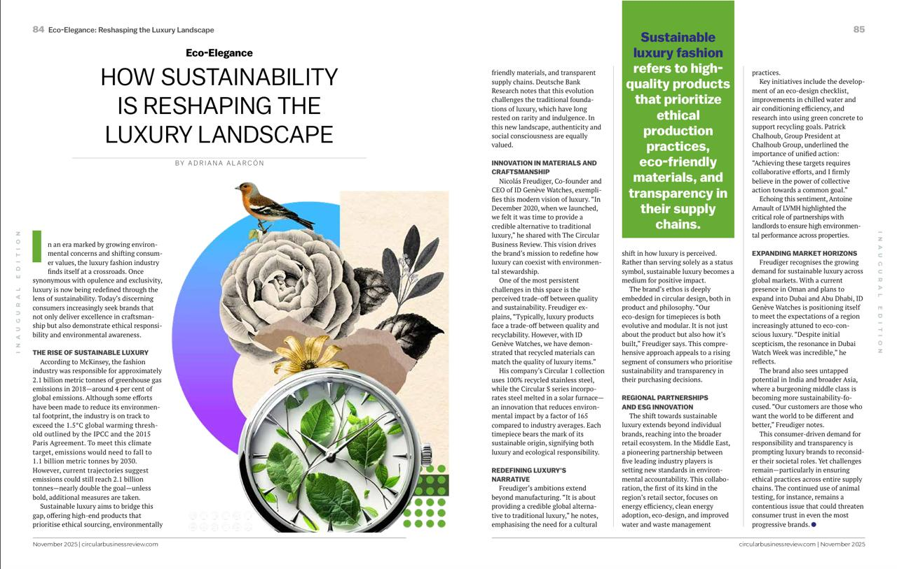

Tatiana Clouthier Reflects on Challenges, Mexico’s Future
Tatiana Clouthier reflects on Mexico’s industrial policy, manufacturing priorities, and the role of small businesses in the country’s economic future.
Read the storyDocumentary
by Adriana Alejandra Alarcón Barajas
Words & reporting
Tatiana Clouthier reflects on Mexico’s industrial policy, manufacturing priorities, and the role of small businesses in the country’s economic future.
Read the story
Claudia Sheinbaum says Donald Trump sought a greater U.S. role in Mexico’s oil sector, while stressing that any investment must comply with Mexican law.
Read the storyA look at construction’s climate impact and how lower-carbon materials, efficient buildings, and circular design can support a more sustainable built environment.
Read the storyIn print · Circular Business Review
Adriana’s magazine feature on the changing relationship between luxury, sustainability, and responsible production.

Listen in
Giovanni Granados discusses leading logistics with resilience and creativity in this Mexico Business Now Podcast expert contributor audio article.
Featured episode
Giovanni Granados · Mexico Business Now Podcast · Expert Contributor Audio Articles
TikTok
Field report · Broadcast package
Mexico · 03:00
Have a story in mind?
adrialealarcon@gmail.com